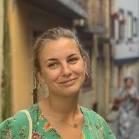
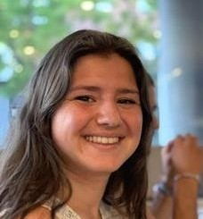

Membres
Les bénévoles au service de l'assocation.
Président
Chargé de développement commercial dans une start-up, Hugo, 26 ans, a de nombreuses expériences associatives ainsi qu’en management des personnes et des organisations.
Trésorière
Assistante sociale de métier, Claire, 24 ans, a mis son sens de l’organisation et de l’écoute au service des Scouts et Guides de France ces cinq dernières années.

Secrétaire
Etudiante en coopération et développement de l’Amérique Latine, Teresa, 22 ans, a une longue expérience associative chez les Scouts et Guides de France où elle a guidé de nombreux jeunes dans la réalisation de leurs projets.